1. Introduction
In modern cloud-native architectures, secure and scalable secret management is a critical requirement. Organizations increasingly operate multi-tenant Kubernetes clusters and microservices that demand isolated access to sensitive credentials, encryption keys, and configuration data. Solutions must align with zero-trust principles while ensuring operational simplicity and compliance.
HashiCorp Vault is a highly flexible and extensible tool for managing secrets, encryption keys, and access policies. With the introduction of Vault Namespaces (Enterprise feature), Vault enables full logical isolation for different teams, environments, or tenants within a single deployment.
Complementing this, the External Secrets Operator (ESO) provides Kubernetes-native integration with external secret stores like Vault, AWS Secrets Manager, and others. ESO enables secure, declarative secret synchronization into Kubernetes clusters, supporting dynamic secret rotation and fine-grained access control.
Keycloak serves as the centralized Identity Provider (IdP) within the seminar’s architecture, managing authentication flows and user identities.
This seminar focuses on demonstrating a complete, automated workflow to:
-
Provision a lightweight K3s Kubernetes cluster suitable for labs and development.
-
Deploy Vault configured for high availability and simulated namespaces using KV backends.
-
Integrate Vault with Kubernetes authentication per namespace.
-
Install and configure the External Secrets Operator.
-
Deploy a practical Go-based API (Sentinel‑1) that consumes secrets and authenticates users via Keycloak.
Keycloak will be configured as the centralized Identity Provider (IdP) to manage authentication flows, realms, clients, and user identities across all environments (dev, qa, and prod).
Throughout the seminar, we emphasize reproducibility, security best practices, and real-world applicability, offering students a hands-on, industry-aligned experience.
2. Seminar Objectives
The primary objective of this seminar is to enable students to design, automate, and operate a secure, cloud-native secrets management platform using HashiCorp Vault and the External Secrets Operator (ESO) within Kubernetes.
Participants will gain practical experience in building a multi-environment setup aligned with zero-trust security principles and modern cloud best practices.
2.1. Key Learning Outcomes
Upon completion of this seminar, students will be able to:
-
Provision a lightweight Kubernetes cluster using
k3dfor local development. -
Deploy HashiCorp Vault via Helm, configured for high availability and logical namespace isolation.
-
Design and configure Kubernetes namespaces (
dev,qa,prod) for multi-environment separation. -
Deploy a centralized Keycloak instance, managing separate realms and clients per environment.
-
Configure and utilize the External Secrets Operator to:
-
Retrieve secrets securely from Vault.
-
Inject secrets into Kubernetes workloads.
-
Synchronize secret updates automatically as Vault values change.
-
-
Automate the end-to-end deployment and configuration using Terraform and Ansible. == Environment and Tooling
This seminar is designed to be executed in a local development environment that closely simulates production-grade Kubernetes deployments. Participants are expected to provision and configure the necessary tools to automate the entire secrets management lifecycle.
2.2. Tools and Technologies
The following tools and platforms are required:
-
Docker: Container runtime engine (using Docker Desktop for macOS or Ubuntu).
-
k3d: Lightweight wrapper to run K3s (Kubernetes) clusters inside Docker.
-
Helm: Kubernetes package manager for deploying Vault, Keycloak, and ESO charts.
-
Terraform: Infrastructure as Code (IaC) tool for automating Vault and Kubernetes resources.
-
Ansible: Configuration management and orchestration for Keycloak and Vault setups.
-
External Secrets Operator (ESO): Kubernetes controller to synchronize secrets from Vault.
-
HashiCorp Vault: Centralized secrets management and encryption service.
-
Keycloak: Identity and Access Management (IAM) solution for authentication and authorization.
2.3. System Prerequisites
Participants should have the following baseline environment:
-
A computer running macOS or Ubuntu with at least 8 GB of RAM.
-
Docker installed and running.
-
Internet access to pull container images, Helm charts, and package dependencies.
|
It is highly recommended to use the latest stable versions of Docker, Helm, Terraform, and Ansible to ensure compatibility with the provided instructions. |
2.4. Tool Version Matrix
The following table summarizes the versions used during the development and validation of this seminar:
| Tool | Version Tested | Official Documentation |
|---|---|---|
Docker |
28.1.1 |
|
Helm |
v3.17.3 |
|
Terraform |
v1.11.3 |
|
Ansible |
core 2.18.5 |
|
k3d |
v5.8.3 |
|
Kubernetes |
v1.31.5+k3s1 |
|
External Secrets Operator (ESO) |
v0.16.1 |
|
HashiCorp Vault |
1.19.0 |
|
Keycloak |
26.2.0 |
3. Platform Foundation: K3d, Vault, ESO, and Keycloak Setup
The following components form the technical foundation for deploying secure, multi-environment secret management and authentication platforms within Kubernetes.
This section provides a structured setup to ensure isolation, scalability, and reproducibility across the environments dev, qa, and prod.
3.1. Provisioning the K3s Cluster
K3s is a lightweight Kubernetes distribution optimized for resource-constrained environments and rapid prototyping. k3d further simplifies deployment by running K3s clusters inside Docker containers, enabling easy resets, snapshots, and multi-node simulations without VM overhead.
3.1.1. Step 1: Install K3d
Verify the installation:
k3d versionExpected output should look similar to:
k3d version v5.8.3
k3s version v1.31.5-k3s1 (default)3.1.2. Step 2: Create the K3s Cluster
We’ll create a cluster with one server node and two agent nodes, exposing ports 443 and 80 for the load balancer.
k3d cluster create workshop \
--servers 1 \
--agents 2 \
--port "443:443@loadbalancer" \
--port "80:80@loadbalancer"This command:
-
Creates a cluster named
workshop. -
Starts 1 server (control-plane) and 2 agents (workers).
-
Exposes port 443 from the load balancer to the host.
-
Disables Traefik to avoid conflicts with custom ingress controllers.
3.1.3. Step 3: Verify Cluster Status
kubectl get nodesExpected output:
NAME STATUS ROLES AGE VERSION
k3d-workshop-agent-0 Ready <none> 11s v1.31.5+k3s1
k3d-workshop-agent-1 Ready <none> 11s v1.31.5+k3s1
k3d-workshop-server-0 Ready control-plane,master 18s v1.31.5+k3s1The K3s cluster is now ready for deploying Vault and other components.
|
To temporarily stop the cluster and free up system resources, you can stop the underlying Docker containers: To bring the cluster back online later: This is especially useful during multi-day workshops or when switching between tasks, as it avoids recreating the cluster from scratch. |
3.2. Installing Vault
In this step, we will install HashiCorp Vault in the Kubernetes cluster using Helm. Vault will serve as our central secret management system. We will use the official Helm chart and run it in "dev" mode initially, just to validate the deployment and make quick iterations.
|
Recommended Resources:
|
3.2.1. Add the HashiCorp Helm Repository
helm repo add hashicorp https://helm.releases.hashicorp.com
helm repo update3.2.2. Deploying Vault in HA Mode
In this section, we will deploy Vault in High Availability (HA) mode using the integrated Raft storage backend. This setup provides a more realistic and production-like experience, suitable for multi-node clusters and secret replication scenarios.
We start by installing Vault using the official Helm chart, with a custom values.yaml file that enables HA mode and configures Raft storage with retry_join directives.
helm upgrade --install vault hashicorp/vault \
--namespace vault \
--create-namespace \
-f helm/vault/config.yamlThe configuration:
-
Deploys 3 Vault replicas.
-
Enables Raft storage with automatic
retry_join. -
In this seminar, TLS is disabled for Vault for simplicity and local accessibility. In production environments, always enable TLS to protect secret communications.
-
Exposes the Vault UI using a LoadBalancer service.
3.2.3. Wait for the Pods to Be Ready
Check that all Vault pods are running:
kubectl get pods -n vaultExpected output:
NAME READY STATUS RESTARTS AGE
vault-0 1/1 Running 0 2m
vault-1 1/1 Running 0 2m
vault-2 1/1 Running 0 2m3.2.4. Initialize the Vault Cluster
Vault must be initialized before it can be used. This step generates the master key, which is split into multiple unseal keys.
We’ll use a simplified setup with only 1 unseal key required:
kubectl exec -it vault-0 -n vault -- vault operator init -key-shares=1 -key-threshold=1|
Vault uses Shamir’s Secret Sharing algorithm to split a master key into multiple parts (shares).
- For this seminar, we simplify by using 1 key out of 1 ( |
Make sure to copy and store the unseal key and root token that are printed. You’ll need them in the next step.
3.2.5. Unseal All Vault Nodes
Each Vault pod must be manually unsealed (unless auto-unseal is configured). You will use the same unseal key generated during the initialization step.
To simplify this process, we recommend storing the unseal key in a shell variable:
export VAULT_UNSEAL_KEY="your-unseal-key-here"Replace "your-unseal-key-here" with the key printed during vault operator init.
Then unseal each pod using:
kubectl exec -it vault-0 -n vault -- vault operator unseal $VAULT_UNSEAL_KEY
kubectl exec -it vault-1 -n vault -- vault operator unseal $VAULT_UNSEAL_KEY
kubectl exec -it vault-2 -n vault -- vault operator unseal $VAULT_UNSEAL_KEYAfter all nodes are unsealed, you can verify the cluster status by running:
kubectl exec -it vault-0 -n vault -- vault statusThis will show whether Vault is sealed, the current HA mode, the active node, and peer connectivity.
3.2.6. Accessing the Vault UI via Ingress
To access the Vault Web UI using an Ingress controller (e.g. Traefik), we expose the Vault service externally by deploying a custom Ingress using our own Helm chart.
-
Make sure an Ingress controller like Traefik is deployed in your cluster.
-
Deploy the Ingress pointing to the
vault-uiservice using the following Helm command:
helm upgrade --install vault-ui-ingress ./helm/traefik/ingress \
--namespace vault \
--set name=vault-ui-ingress \
--set namespace=vault \
--set annotations.ingressClass=traefik \
--set spec.ingressClassName=traefik \
--set spec.rules.host=vault.test \
--set spec.rules.paths[0].path="/" \
--set spec.rules.paths[0].pathType=Prefix \
--set spec.rules.paths[0].backend.service.name=vault-ui \
--set spec.rules.paths[0].backend.service.port=8200 \
--set tls.enabled=falseThis configuration:
-
Deploys a Kubernetes
Ingressresource under thevaultnamespace -
Points to the
vault-uiservice on port8200 -
Uses Traefik as the Ingress controller
-
Does not enable TLS (exposes via HTTP only)
-
Add a DNS entry in your local
/etc/hostsfile to routevault.testto your local Ingress controller (typically127.0.0.1):
-
echo "127.0.0.1 vault.test" | sudo tee -a /etc/hosts-
Open your browser and go to: http://vault.test
-
Log in using the Initial Root Token.
Vault is now accessible through an Ingress route, ready to be used with the rest of your platform.
You can also access the Vault UI via port-forwarding:
kubectl port-forward -n vault svc/vault-ui 8200:8200Then visit: http://localhost:8200 Login using the Initial Root Token.
After logging in, you should see the Vault UI dashboard
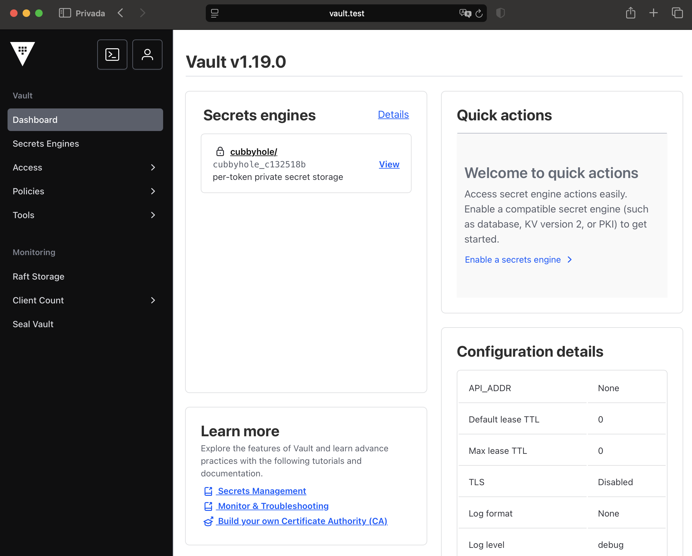
3.3. Preparing Kubernetes Namespaces and Workloads
Before configuring Vault, we need to prepare our Kubernetes cluster with the necessary namespaces.
Each environment (dev, qa, prod) will have:
-
A dedicated Kubernetes namespace
-
A custom ServiceAccount named
vault-sa
This setup ensures that:
-
Vault roles and policies can bind securely to service accounts per namespace
-
Secrets can later be synced with External Secrets Operator (ESO) in a clean, isolated manner
3.3.1. Create Namespaces and Service Accounts
for ns in dev qa prod; do
kubectl create namespace $ns
kubectl create serviceaccount vault-sa -n $ns
done|
We intentionally avoid using the default service account to improve security and clarity in Vault bindings. |
Once these namespaces and service accounts are in place, we can proceed to configure Vault using Terraform.
3.4. Configuring Vault
With Vault running in High Availability (HA) mode, we now configure it to manage secrets for three isolated environments: dev, qa, and prod.
Since Vault OSS does not support namespaces (an Enterprise-only feature), we simulate environment-level isolation using a combination of:
-
Separate KV secrets engines:
secret-dev,secret-qa, andsecret-prod -
Access control policies (ACLs) scoped to each environment
-
Kubernetes auth roles bound to specific namespaces
All configuration is automated using Terraform for consistency, reproducibility, and version control.
3.4.1. Directory Structure
All Terraform files related to Vault configuration are located under terraform/vault/:
terraform/vault/
├── kubernetes_auth.tf # Enables Kubernetes auth and defines Vault roles
├── kv_mounts.tf # Mounts KV v2 engines for dev, qa, and prod
├── policies.tf # Defines ACL policies for each environment
├── provider.tf # Vault provider configuration using input variables
└── variables.tf # Input variables for Vault address and token3.4.2. Mounting KV Engines
The kv_mounts.tf file mounts a KV v2 secrets engine for each environment using vault_mount resources.
These mounts appear as:
-
secret-dev/→ used exclusively by workloads in thedevnamespace -
secret-qa/→ used byqaworkloads -
secret-prod/→ dedicated toprod
All engines are configured with version 2 for secret versioning and soft delete support.
3.4.3. Defining Access Policies
The file policies.tf defines a Vault policy for each environment.
Each policy allows read-only access to the corresponding KV mount, ensuring strict separation of access.
Example: dev policy
path "secret-dev/data/*" {
capabilities = ["read", "list"]
}This approach prevents workloads in one namespace from accessing secrets belonging to another.
3.4.4. Enabling Kubernetes Authentication
The kubernetes_auth.tf file automates the full setup of the Kubernetes auth method in Vault:
-
Enables the
kubernetesauth backend -
Configures Vault to communicate with the in-cluster Kubernetes API
-
Creates one Vault
roleper environment: -
devrole → bound to service accounts in thedevnamespace -
qarole → bound toqanamespace -
prodrole → bound toprodnamespace
This ensures that only authorized workloads can request secrets from the correct environment.
3.4.5. Providing Vault and Kubernetes Credentials
To securely configure Vault with Kubernetes authentication, we supply Terraform with the necessary sensitive variables via a .auto.tfvars.json file. This format ensures that variables are automatically discovered during terraform apply, avoiding the need for manual input via CLI arguments or environment variables. It also promotes reproducibility and reduces the likelihood of human error in automation pipelines. Additionally, the .json format is ideal for handling complex or multiline values such as certificates and JWT tokens.
Create the file secrets.auto.tfvars.json inside terraform/vault/ with the following content:
{
"vault_addr": "http://vault.test",
"vault_token": "hvs.YourRootTokenHere",
"kubernetes_host": "https://kubernetes.default.svc",
"kubernetes_ca_cert": "-----BEGIN CERTIFICATE-----\nMIID...\n-----END CERTIFICATE-----",
"token_reviewer_jwt": "eyJhbGciOiJSUzI1NiIsIn..."
}|
Terraform automatically loads all files ending in |
3.4.6. How to Obtain the Required Values
Vault’s Kubernetes authentication method relies on validating ServiceAccount JWT tokens presented by pods in the cluster. To establish trust, Vault must be configured with:
-
The Kubernetes cluster’s public CA certificate (used to verify the API server’s TLS identity).
-
A valid ServiceAccount JWT token (used to authenticate incoming pod identities).
These credentials are typically retrieved from within a pod that has access to the Kubernetes API. By capturing them directly from a running pod, we ensure compatibility with the in-cluster configuration and secure communication with the Kubernetes control plane.
These values can be extracted from any running pod in your cluster, such as vault-0.
To get the Kubernetes CA certificate:
kubectl exec -n vault vault-0 -- cat /var/run/secrets/kubernetes.io/serviceaccount/ca.crt | awk '{printf "%s\\n", $0}'Copy the entire output, including the -----BEGIN CERTIFICATE----- and -----END CERTIFICATE----- lines into the JSON value of kubernetes_ca_cert.
To get the token reviewer JWT:
kubectl exec -n vault vault-0 -- cat /var/run/secrets/kubernetes.io/serviceaccount/tokenCopy the full JWT token output and paste it into the token_reviewer_jwt field.
|
Do not commit the |
3.4.7. Applying the Configuration
Once the variables file is ready, apply the configuration:
cd terraform/vault
terraform init
terraform applyTerraform will:
-
Mount the three KV secrets engines
-
Upload environment-specific access policies
-
Enable and configure the Kubernetes authentication backend
-
Create Vault roles bound to service accounts in the
dev,qa, andprodnamespaces
Your Vault instance is now fully configured for secure, isolated access from each Kubernetes environment.
3.4.8. Verifying Kubernetes Authentication to Vault
Now that Vault is configured, we can verify that a Kubernetes workload in the dev namespace can authenticate to Vault and access its secrets securely using the vault-sa service account.
Step 1: Create a test secret in Vault
First, store a secret in the secret-dev path using a Vault token that has the appropriate policy (e.g., the root token):
export VAULT_ADDR=http://vault.test
export VAULT_TOKEN=hvs.YourRootTokenHere
vault kv put secret-dev/example username="admin" password="s3cr3t"
vault kv put secret-qa/example username="admin" password="s3cr3t"|
If you see the error:
Make sure you’re using a Vault token that includes the correct policy ( |
Step 2: Deploy a test pod using vault-sa
Run the following command to deploy a temporary test pod in the dev namespace:
kubectl apply -f - <<EOF
apiVersion: v1
kind: Pod
metadata:
name: test-vault
namespace: dev
spec:
serviceAccountName: vault-sa
containers:
- name: tester
image: alpine
command: ["sh", "-c", "sleep 3600"]
restartPolicy: Never
EOFStep 3: Access the pod and install curl + jq
kubectl exec -it test-vault -n dev -- shOnce inside the pod, install the required tools:
apk add --no-cache curl jqStep 4: Authenticate with Vault using the pod’s service account
Export the Vault address and read the pod’s JWT token:
export VAULT_ADDR=http://vault.vault.svc:8200
export SA_TOKEN=$(cat /var/run/secrets/kubernetes.io/serviceaccount/token)Use the token to authenticate to Vault:
export VAULT_TOKEN=$(curl --silent --request POST \
--data '{"jwt": "'"$SA_TOKEN"'", "role": "dev"}' \
$VAULT_ADDR/v1/auth/kubernetes/login | jq -r '.auth.client_token')
# Verify the token
echo $VAULT_TOKENThe response that you receive should look similar to this:
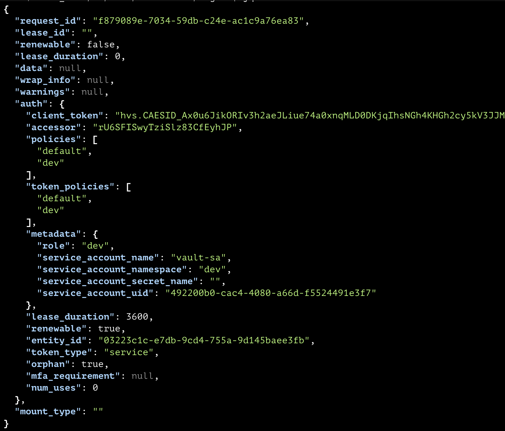
Step 5: Use the Vault token to retrieve a secret
Now that we have a Vault token, use it to access the secret:
curl --silent \
--header "X-Vault-Token: $VAULT_TOKEN" \
$VAULT_ADDR/v1/secret-dev/data/example | jqIf configured correctly, you should see the secret:
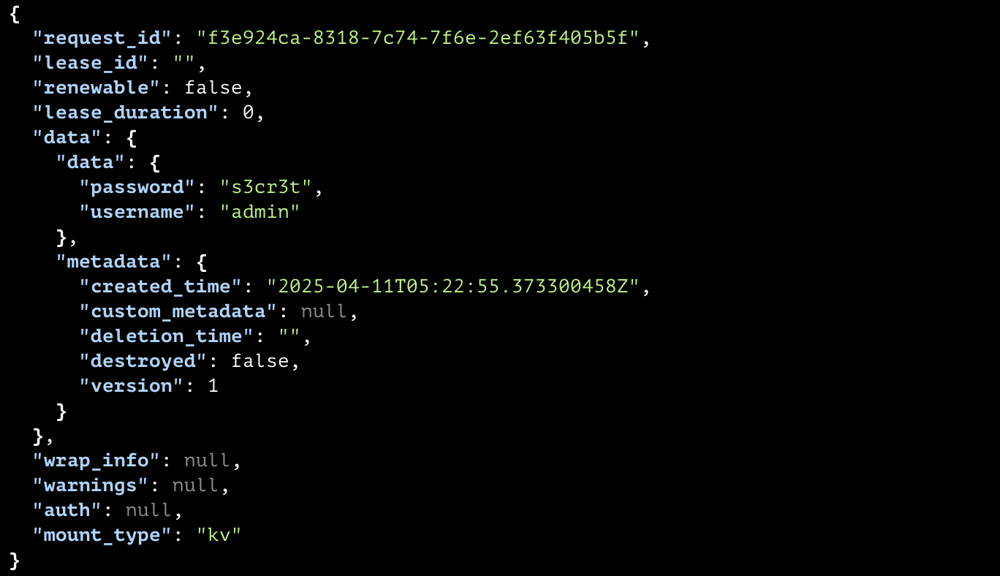
Final Step: Clean up
Exit the pod and delete it:
exit
kubectl delete pod test-vault -n dev|
You can capture this output as a screenshot to include in the lab report or Medium post as proof of successful Vault-Kubernetes integration. |
3.5. Installing External Secrets Operator (ESO)
The External Secrets Operator (ESO) is a Kubernetes-native controller that enables secure integration between external secret stores—such as Vault—and Kubernetes.
It allows secrets managed in Vault to be automatically synchronized and projected as native Kubernetes Secret resources, supporting versioned updates, fine-grained access control, and declarative secret management.
3.5.1. Recommended Resources
3.5.2. 1. Add the ESO Helm repository
helm repo add external-secrets https://charts.external-secrets.io
helm repo update3.5.3. 2. Install ESO in the external-secrets namespace
helm upgrade --install external-secrets external-secrets/external-secrets \
--namespace external-secrets \
--create-namespaceThis command:
-
Installs ESO components (Core Controller, Webhook, Cert Controller)
-
Creates the required CRDs (
SecretStore,ClusterSecretStore,ExternalSecret) -
Prepares the cluster to sync secrets from Vault
3.5.4. 3. Verify ESO pods are running
kubectl get pods -n external-secretsExpected output:
NAME READY STATUS RESTARTS AGE
external-secrets-86f7b8cc94-jlzj9 1/1 Running 0 8m
external-secrets-cert-controller-59f9f9cd77-z4cf6 1/1 Running 0 8m
external-secrets-webhook-5fc8544c4c-dld6m 1/1 Running 0 8m|
All components should report |
3.5.5. 4. Create a SecretStore in each environment namespace
Each namespace (dev, qa, prod) requires its own SecretStore resource to define how ESO authenticates with Vault via Kubernetes.
To preview the manifest using Helm templating:
helm template vault --namespace dev helm/external-secrets/secretStore/ --dry-run=server | yqExample output:
# Source: secretStore/templates/secretStore.yaml
apiVersion: external-secrets.io/v1beta1
kind: SecretStore
metadata:
name: vault-store
namespace: dev
spec:
provider:
vault:
server: http://vault.vault.svc:8200
path: secret-dev
version: "v2"
auth:
kubernetes:
mountPath: kubernetes
role: dev
serviceAccountRef:
name: vault-saTo deploy it:
helm upgrade --install vault --namespace dev helm/external-secrets/secretStore/Verify that the SecretStore is valid:
kubectl get secretstore -n devExpected output:
NAME AGE STATUS CAPABILITIES READY
vault-store 48s Valid ReadWrite True3.5.6. 5. Create ExternalSecrets to Sync Vault Data
The ExternalSecret resource defines how ESO fetches data from Vault and creates a corresponding Kubernetes Secret.
Preview the manifest:
helm template dev-credential --namespace dev helm/external-secrets/externalSecret/ --dry-run=server | yqExpected output:
# Source: externalSecret/templates/externalSecret.yaml
apiVersion: external-secrets.io/v1beta1
kind: ExternalSecret
metadata:
name: dev-credential
namespace: dev
spec:
refreshInterval: 1h
secretStoreRef:
name: vault-store
kind: SecretStore
target:
name: synced-dev-credential
creationPolicy: Owner
data:
- secretKey: username
remoteRef:
key: example
property: username
- secretKey: password
remoteRef:
key: example
property: passwordDeploy it:
helm upgrade --install dev-credential --namespace dev helm/external-secrets/externalSecret/Verify that it was created:
kubectl get externalsecret -n devExpected output:
NAME STORETYPE STORE REFRESH INTERVAL STATUS READY
dev-credential SecretStore vault-store 1h SecretSynced True3.5.7. 6. Verify that the secret was synced
Once synced, ESO creates a Kubernetes Secret with the desired values.
kubectl get secret synced-dev-credential -n dev -o jsonpath='{.data}' | jqThe output should include both username and password keys encoded in base64.
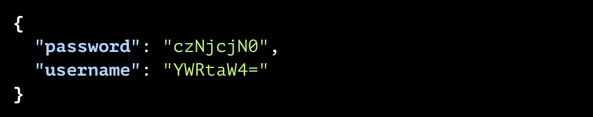
3.6. Deploying Keycloak
Keycloak is an open-source Identity and Access Management (IAM) platform that also supports Customer Identity and Access Management (CIAM) use cases. It provides authentication, authorization, and identity federation capabilities suitable for both internal service identities and external user access.
In this seminar, Keycloak serves as the central Identity Provider (IdP), hosting separate realms for each environment (dev, qa, prod) to isolate identity domains across namespaces.
3.6.1. Recommended Resources
3.6.2. 1. Add the Bitnami Helm repository
helm repo add bitnami https://charts.bitnami.com/bitnami
helm repo update3.6.3. 2. Deploy Keycloak in the iam namespace (with persistence)
Keycloak will be deployed using the Bitnami Helm chart, which includes PostgreSQL as a subchart for simplicity. This co-deployment enables data persistence across restarts.
helm upgrade --install keycloak bitnami/keycloak \
--namespace iam \
--create-namespace \
--set auth.adminUser=admin \
--set auth.adminPassword=admin123 \
--set proxy=edge \
--set service.type=ClusterIP \
--set postgresql.primary.persistence.enabled=true \
--set postgresql.primary.persistence.size=1GiThis configuration:
-
Installs Keycloak in the
iamnamespace -
Sets default admin credentials (for demo use only)
-
Uses internal PostgreSQL with persistent volume
-
Exposes Keycloak via
ClusterIP(internal access only) -
Enables
proxy=edgefor UI access via port-forward
|
This setup is sufficient for the seminar. In production, consider using an external managed PostgreSQL service. |
3.6.4. 3. Wait for the Keycloak pods to be ready
kubectl get pods -n iamExpected output:
NAME READY STATUS RESTARTS AGE
keycloak-0 1/1 Running 0 1m3.6.5. 4. Access the Keycloak Admin UI via Ingress
Keycloak is exposed externally via a dedicated Kubernetes Ingress resource, using Traefik as the Ingress controller.
-
Deploy the Ingress pointing to the
keycloakservice on port80using the following Helm command:
helm upgrade --install keycloak-ui-ingress ./helm/traefik/ingress \
--namespace iam \
--set name=keycloak-ui-ingress \
--set namespace=iam \
--set annotations.ingressClass=traefik \
--set spec.ingressClassName=traefik \
--set spec.rules.host=keycloak.test \
--set spec.rules.paths[0].path="/" \
--set spec.rules.paths[0].pathType=Prefix \
--set spec.rules.paths[0].backend.service.name=keycloak \
--set spec.rules.paths[0].backend.service.port=80 \
--set tls.enabled=false-
Add an entry to your local
/etc/hostsso thekeycloak.testdomain resolves to your Ingress controller:
echo "127.0.0.1 keycloak.test" | sudo tee -a /etc/hosts-
Open your browser and navigate to: http://keycloak.test
Login using:
-
Username:
admin -
Password:
admin123
You now have Keycloak accessible through Ingress, consistent with how Vault is exposed.
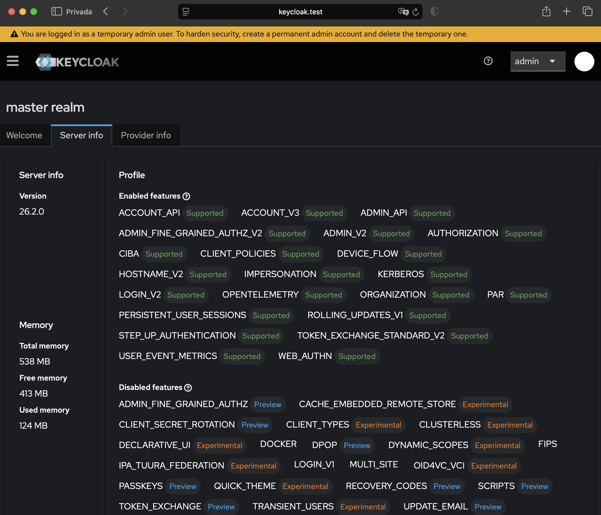
4. Deploying Sentinel‑1 API with Vault, ESO, and Keycloak Integration
In this section, we will deploy the Sentinel‑1 Go-based API into a Kubernetes cluster, showcasing a complete integration of HashiCorp Vault for secrets management, External Secrets Operator (ESO) for Kubernetes-native secret synchronization, and Keycloak as the centralized Identity Provider (IdP).
The Sentinel‑1 API source code is publicly available at: Sentinel-1 GitHub Repository.
Each instance of the application will authenticate against a dedicated Keycloak client configured within separate realms corresponding to each environment (dev, qa, and prod).
The associated credentials (client_id and client_secret) for each client will be securely stored in environment-specific Vault KV secrets engines (secret-dev, secret-qa, secret-prod).
To enable secure, dynamic injection of secrets into Kubernetes workloads, a SecretStore and an ExternalSecret will be provisioned per namespace.
ESO will dynamically synchronize credentials from Vault, projecting them into Kubernetes as native Secret objects with automatic updates on credential changes.
Once credentials are synchronized, the Sentinel‑1 API will be deployed into each namespace. The application is designed to load its configuration dynamically from the mounted secrets and supports hot-reloading, ensuring seamless propagation of secret rotations without requiring manual restarts.
This deployment exemplifies a full-stack, cloud-native architecture aligned with zero-trust security principles, demonstrating best practices in secure workload configuration and multi-environment identity federation.
4.1. Automating Keycloak Realm, Client, and User Provisioning
In this step, we automate the creation of Keycloak realms, clients, and users using Ansible.
This configuration is executed separately for each environment (dev, qa, prod) to enforce proper segregation and security boundaries.
We use the following Ansible playbooks:
-
realm.yml: creates the Keycloak realm (e.g.,dev,qa,prod) -
client.yml: defines a Keycloak client inside that realm -
user.yml: creates a set of users to authenticate into the application
These playbooks use a shared values.yml file to define reusable parameters such as client names, URIs, and user lists.
|
Before running the playbooks, ensure that Ansible is installed on your machine.
You can install Ansible using Verify your installation with: |
4.1.1. Execute per Environment
To automate the creation of realms, clients, and users in Keycloak:
Set the environment variable ENV to the desired environment (dev, qa, or prod):
export ENV=prodRun the playbooks using the ENV variable to target the corresponding environment:
ansible-playbook realm.yml \
-e @values.yml \
-e env_work=$ENV \
-e auth_username=admin \
-e auth_password=admin123
ansible-playbook client.yml \
-e @values.yml \
-e env_work=$ENV \
-e auth_username=admin \
-e auth_password=admin123
ansible-playbook user.yml \
-e @values.yml \
-e env_work=$ENV \
-e auth_username=admin \
-e auth_password=admin123Repeat for each environment by setting ENV accordingly.
|
Ensure the Keycloak instance is reachable at |
|
After running the playbooks, locate the generated
Each secret must contain the keys:
- This ensures that credentials are securely stored for later retrieval via External Secrets Operator. |
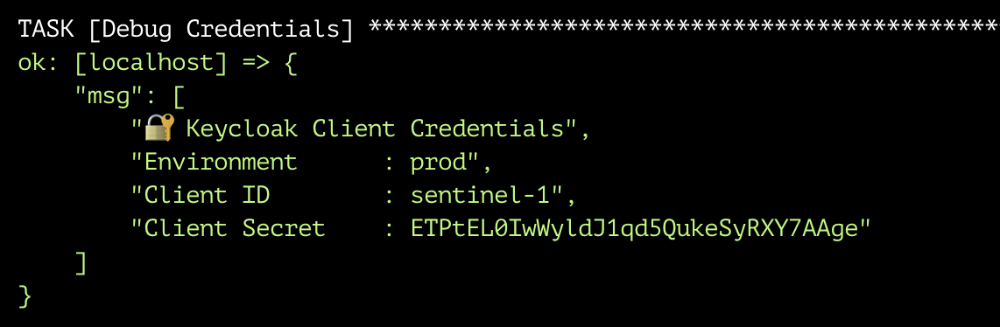
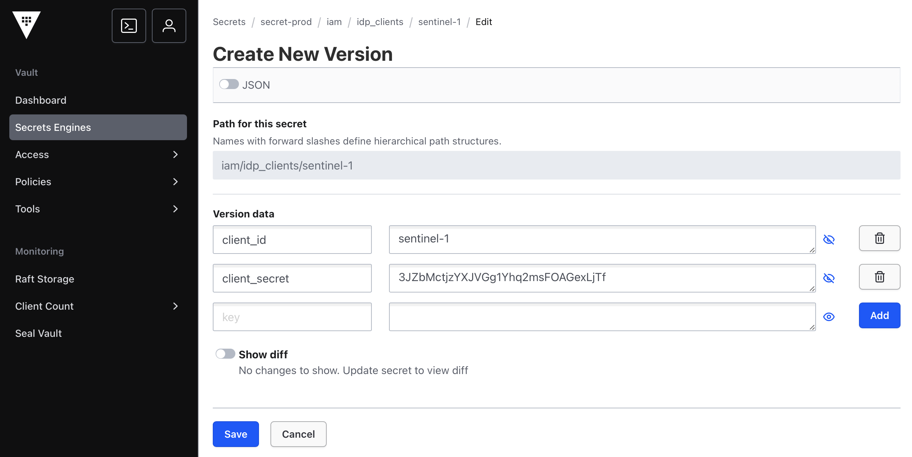
4.2. Keycloak Configuration Validation (Optional)
After running the playbooks, you can visually confirm that the realms, clients, and users were created correctly in the Keycloak Admin UI.
4.2.1. View Realms List
Log in to the Keycloak Admin Console (http://keycloak.test/admin) using the admin credentials.
You should see the list of realms including: dev, qa, and prod.
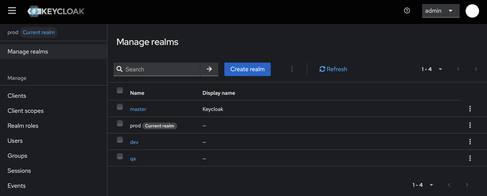
4.2.2. View Client Configuration
Within any realm (e.g. prod), go to Clients → sentinel-1.
This shows the client details including client ID, secret, redirect URIs, and access settings.
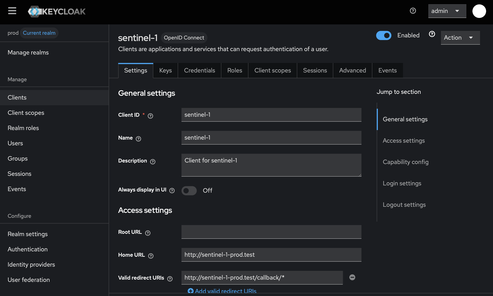
4.2.3. View Created Users
Navigate to Users within the selected realm to confirm that the test users were successfully provisioned.
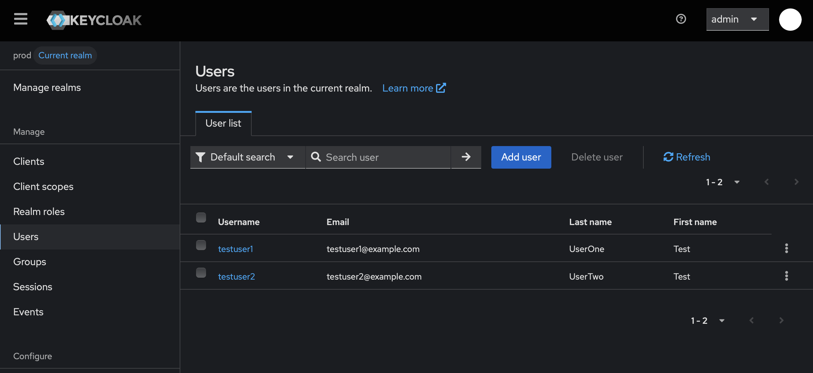
These visual checks serve as a quick validation that the automation executed correctly and that your identity layer is correctly configured per environment.
4.3. Deploying Sentinel‑1 API with Vault, ESO, and Keycloak Integration
In this section, we will deploy the Sentinel‑1 API into the dev, qa, and prod namespaces.
Secrets (client_id and client_secret) will be synchronized from Vault into Kubernetes using the External Secrets Operator (ESO).
We will automate everything using a for loop to avoid repetition.
4.3.1. Step 1: Deploy SecretStore and ExternalSecret for each environment
Use the following script to create the SecretStore and ExternalSecret dynamically for each namespace (dev, qa, prod).
for ENV in dev qa prod; do
echo "Deploying SecretStore and ExternalSecret in $ENV..."
helm upgrade --install vault-$ENV \
helm/external-secrets/secretStore/ \
--namespace $ENV \
--set vault.vaultPath=secret-$ENV \
--set vault.server=http://vault.vault.svc:8200 \
--set vault.auth.kubernetes.mountPath=kubernetes \
--set vault.auth.kubernetes.role=$ENV \
--set vault.auth.kubernetes.serviceAccountName=vault-sa
helm upgrade --install sentinel-1-secret-$ENV \
helm/external-secrets/externalSecret/ \
--namespace $ENV \
--set name=keycloak-client-secret \
--set secretStore.name=vault-$ENV-store \
--set secretStore.kind=SecretStore \
--set target.creationPolicy=Owner \
--set data[0].secretKey=client_id \
--set data[0].remoteRef.key=iam/idp_clients/sentinel-1 \
--set data[0].remoteRef.property=client_id \
--set data[1].secretKey=client_secret \
--set data[1].remoteRef.key=iam/idp_clients/sentinel-1 \
--set data[1].remoteRef.property=client_secret
doneThis loop will:
-
Create a
SecretStoreconfigured for the correct Vault KV engine per environment. -
Create an
ExternalSecretto sync theclient_idandclient_secretfor the Sentinel‑1 API.
4.3.2. Step 2: Deploy the Sentinel‑1 API Across Environments
Once the secrets are synchronized into each namespace, we proceed to deploy the Sentinel‑1 API into the dev, qa, and prod environments.
To automate the deployment process and avoid repetitive manual steps, use the following script:
# Loop through each environment and deploy the Sentinel‑1 API and its corresponding Ingress
for ENV in dev qa prod; do
echo -e "\n Deploying Sentinel‑1 API in $ENV... \n"
# Deploy the API using Helm
helm upgrade --install sentinel-1 helm/sentinel-1/ \
--namespace $ENV \
--set api.name=sentinel-1-$ENV \
--set api.image.name=wmoinar/sentinel-1-$ENV \
--set api.image.tag=1.0.0 \
--set api.redirect_url=http://sentinel-1-$ENV.test/callback \
--set keycloak.issuer_url=http://keycloak.test/realms/$ENV \
--set keycloak.internal_url=http://keycloak.iam.svc.cluster.local/realms/$ENV
# Deploy the Ingress for external access
helm upgrade --install sentinel-1-$ENV-ingress helm/traefik/ingress/ \
--namespace $ENV \
--set annotations.ingressClass=traefik \
--set spec.ingressClassName=traefik \
--set spec.rules.host=sentinel-1-$ENV.test \
--set spec.rules.paths[0].path="/" \
--set spec.rules.paths[0].pathType=Prefix \
--set spec.rules.paths[0].backend.service.name=sentinel-1-$ENV \
--set spec.rules.paths[0].backend.service.port=80 \
--set tls.enabled=false
doneThis loop automates:
-
Deployment of the Sentinel‑1 API containers for each environment.
-
Creation of the corresponding Ingress resources to expose the APIs externally.
4.3.3. Step 3: Configure Local Access
To access the APIs using their respective domain names, add the following entries to your /etc/hosts file:
echo "127.0.0.1 sentinel-1-dev.test" | sudo tee -a /etc/hosts
echo "127.0.0.1 sentinel-1-qa.test" | sudo tee -a /etc/hosts
echo "127.0.0.1 sentinel-1-prod.test" | sudo tee -a /etc/hostsThis ensures that your local machine resolves the custom hostnames to your cluster’s Ingress controller.
4.4. Verifying the End-to-End Platform Setup
This section provides a structured validation process to ensure that all deployed components—Vault, External Secrets Operator (ESO), Keycloak, and the Sentinel‑1 application—are fully operational and integrated across all target environments (dev, qa, and prod).
4.4.1. Infrastructure and Synchronization Validation
First, validate the state of Kubernetes workloads and resources.
Check that the Sentinel‑1 API pods are running:
oc get pods -A | grep sentinel-1Expected output:
dev sentinel-1-dev-7d8df797c8-66htp 1/1 Running 0 11h
prod sentinel-1-prod-74d897864-hfzqz 1/1 Running 0 11h
qa sentinel-1-qa-59d6d55795-z8pps 1/1 Running 0 11hValidate that the SecretStore resources have been successfully created and are in a Ready state:
oc get SecretStore -AExpected output:
NAMESPACE NAME AGE STATUS CAPABILITIES READY
dev vault-dev-store 44h Valid ReadWrite True
dev vault-store 43h Valid ReadWrite True
prod vault-prod-store 43h Valid ReadWrite True
qa vault-qa-store 43h Valid ReadWrite TrueVerify that all ExternalSecret resources are actively synchronized with Vault:
oc get ExternalSecret -AExpected output:
NAMESPACE NAME STORETYPE STORE REFRESH INTERVAL STATUS READY
dev dev-credential SecretStore vault-store 1h SecretSynced True
dev sentinel-1-secret-dev SecretStore vault-dev-store 1h SecretSynced True
prod sentinel-1-secret-prod SecretStore vault-prod-store 2s SecretSynced True
qa sentinel-1-secret-qa SecretStore vault-qa-store 1h SecretSynced TrueFinally, confirm that Kubernetes secrets have been materialized correctly:
oc get secret -A | grep synced-sentinel-1-secretExpected output:
dev synced-sentinel-1-secret-dev Opaque 2 12h
prod synced-sentinel-1-secret-prod Opaque 2 12h
qa synced-sentinel-1-secret-qa Opaque 2 12h4.4.2. Application Functionality Validation
Next, validate end-to-end application login and token acquisition.
-
Open a browser and navigate to the deployed application for the
qaenvironment:http://sentinel-1-qa.testYou should see the Login with Keycloak button.
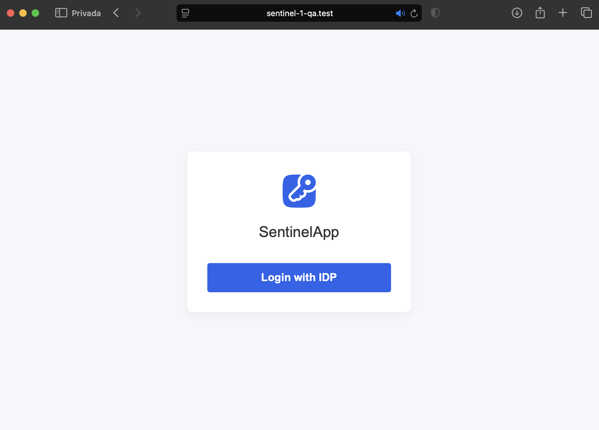
-
Click the login button to initiate the OIDC authentication flow via Keycloak. You should be redirected to the Keycloak login page associated with the
qarealm.
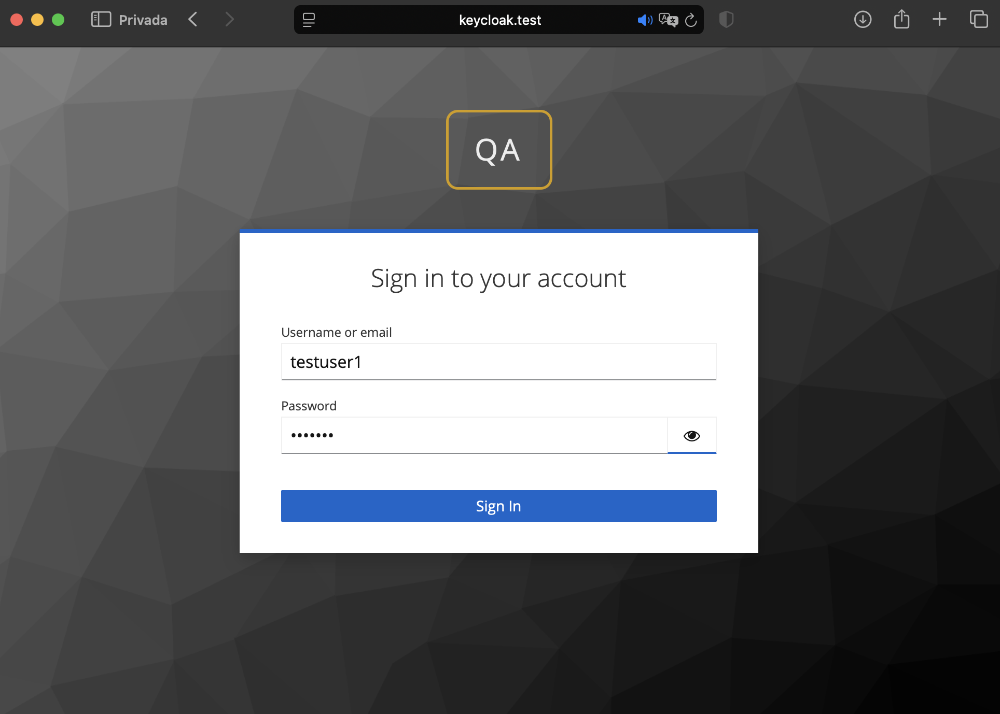
-
Authenticate with valid user credentials (
testuser1or equivalent). -
Finally, the Sentinel‑1 API will display the retrieved ID token, including decoded claims from the Access Token:
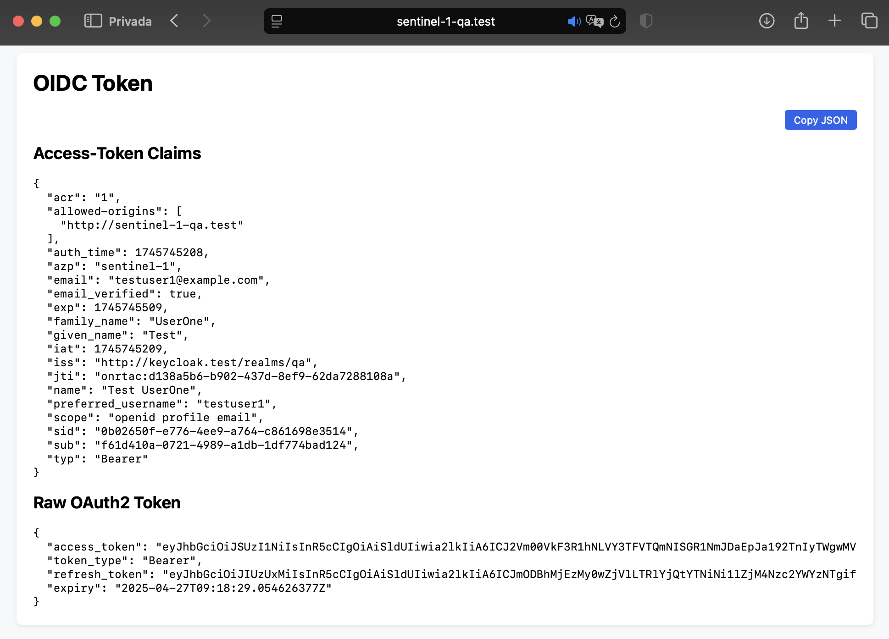
4.4.3. Summary
Successful validation across these steps confirms that:
-
Vault, Kubernetes, and ESO are correctly integrated and secrets are dynamically provisioned.
-
Keycloak is acting as the identity provider with environment-specific realms.
-
The Sentinel‑1 API is capable of real-time secret consumption and OIDC-based user authentication.
|
If any validation step fails, investigate the corresponding subsystem (Vault policy, ESO configuration, Keycloak client mapping, or Kubernetes resource deployment) before proceeding. |
5. Best Practices and Security Considerations
A secure secret management platform in Kubernetes requires disciplined authentication, access control, infrastructure hardening, and operational monitoring. The following best practices should be applied consistently across environments.
5.1. Authentication and Token Management
-
Never hardcode Vault root tokens or static secrets in source files or repositories.
-
Use short-lived, renewable tokens and Kubernetes ServiceAccount authentication for workloads.
-
Audit active tokens periodically and revoke unused credentials.
5.2. Access Control and Segmentation
-
Implement fine-grained Vault policies based on namespaces (
dev,qa,prod) and application roles. -
Bind Vault roles tightly to Kubernetes ServiceAccounts to enforce least privilege.
-
Avoid granting
rootor overly broad policies to services or automations.
5.3. Infrastructure Security
-
Always enable TLS for Vault API and internal Raft communication.
-
Integrate Vault auto-unseal with a cloud KMS provider in production.
-
Apply Kubernetes NetworkPolicies to limit Vault and ESO communication scope.
-
Isolate Vault and ESO components into dedicated namespaces.
5.4. Secret Synchronization and Monitoring
-
Configure ESO for automatic refresh and synchronization of Kubernetes Secrets from Vault.
-
Set resource limits for Vault and ESO pods to prevent resource exhaustion.
-
Monitor Vault health (
/v1/sys/health), Raft quorum status, and ESO synchronization success. -
Enable Vault audit logging and alert on critical failures.
5.5. Final Recommendations
-
Treat secrets as critical infrastructure assets.
-
Automate secret lifecycle management, including rotation and revocation.
-
Plan for resilience: test Vault unsealing, backup recovery, and ESO controller failovers.
-
Periodically review and update security policies to adapt to evolving threats.
Adhering to these practices ensures a robust, zero-trust posture while enabling secure, scalable operations in Kubernetes-native environments.
6. References
The following official documentation sources were referenced throughout this seminar:
Additional resources:
7. List of figures
Figure 1. Vault dashboard
Figure 2. Vault token issued via Kubernetes authentication using vault-sa in dev namespace
Figure 3. Secret retrieved from Vault using the token
Figure 4. Vault secret synced to Kubernetes
Figure 5. User interface of Keycloak
Figure 6. Ansible output showing client credentials
Figure 7. Credentials stored in Vault